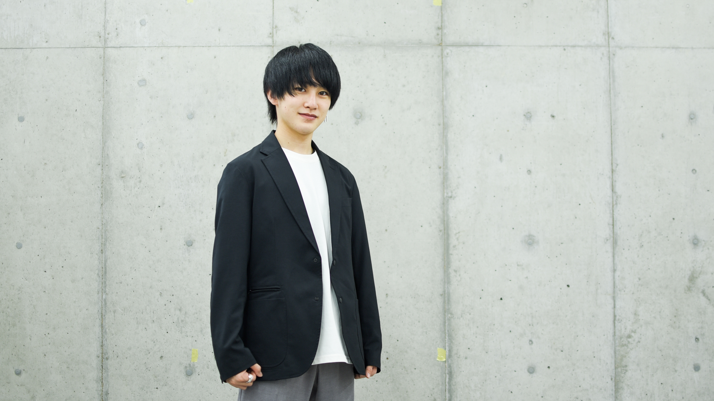

「自己紹介」
「特技＆趣味」
最近カメラを購入したのでいじるのが楽しいです！
自粛要請が解除されたらたくさん色んな所へ撮影に行きたいです！
ジャンプが大好きで今期からはじまったアニメも多いので録画がいっぱい溜まってます。
アルバイトはスーパーのレジをやっているのでレジ打ちとマダムの対応は得意です。
「自己紹介」
はじめまして！12期アニメーションコースのきゃばです！
京都芸術デザイン専門学校2回生で、
来年度から京都芸術大学へ編入します。
学校ではグラフィックやweb、プロダクトデザインなど
幅広い分野で制作活動を行っています。
テックではアニメの他にクラーク国際学校の授業のサポートや
13期Leadersの運営をやっています。
LAに合格してスクールに参加することが今の目標です！
「特技＆趣味」
最近カメラを購入したのでいじるのが楽しいです！
自粛要請が解除されたらたくさん色んな所へ撮影に行きたいです！
ジャンプが大好きで今期からはじまったアニメも多いので
録画がいっぱい溜まってます。
アルバイトはスーパーのレジをやっているので
レジ打ちとマダムの対応は得意です。
はじめまして！12期アニメーションコースのきゃばです！
京都芸術デザイン専門学校2回生で、来年度から京都芸術大学へ編入します。
学校ではグラフィックデザインやwebデザイン、プロダクトデザインなど
幅広い分野で制作活動を行っています。
テックではアニメの他にクラーク国際学校の授業のサポートや13期Leadersの
運営をやっています。LAに合格してスクールに参加することが今の目標です！